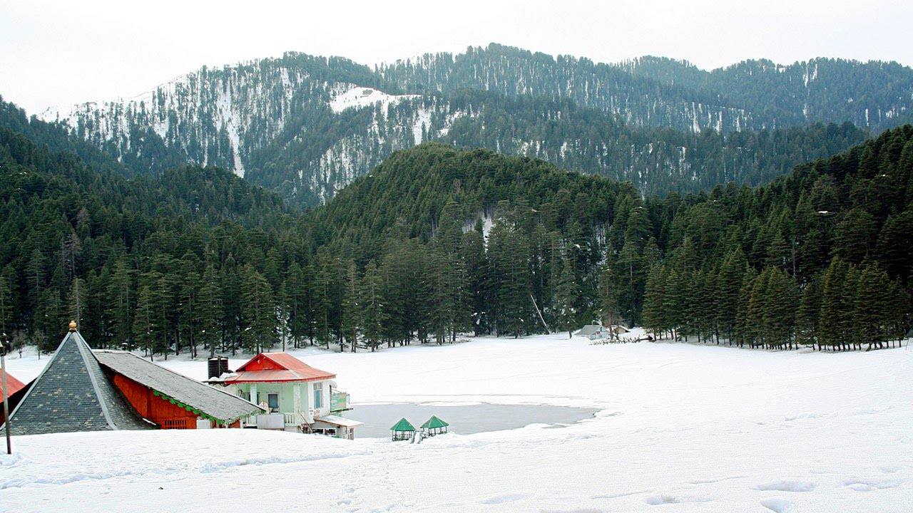
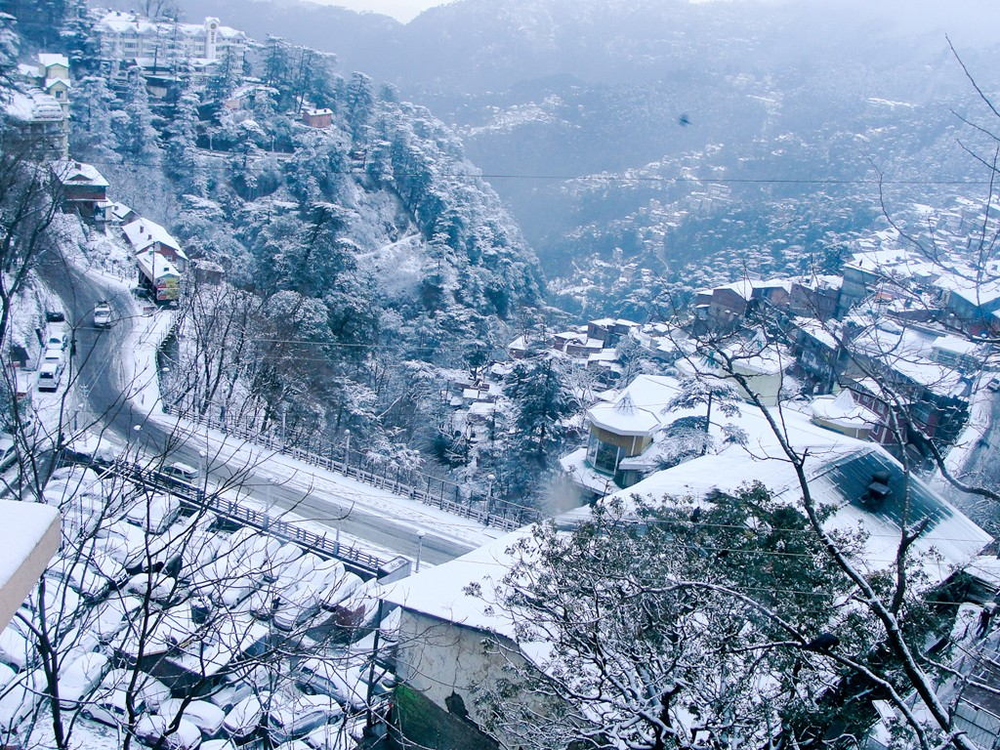

Beautiful places in India
India is part of the continent of Asia.
Most of India forms a peninsula, jutting out into the ocean.
The southeast is bordered by the Bay of Bengal, and the southwest is bordered by the Arabian Sea.
The Himalayas – the world’s highest mountain range – rise in the north of the country.
India’s terrain varies widely, from the Thar Desert in the west to jungles in the northeast.
Jammu and Kashmir
Kashmir Valley
Kashmir valley is no doubt the most beautiful tourist places in India.
The heaven on earth tag is always linked to Kashmir for its evergreen landscapes and snow-filled mountains.
If you are an adrenaline junkie and want to explore the thrilling nature then mountaineering and river rafting are good adventure activities in Kashmir.
The perfect time to visit the Kashmir valley is between the months of March and October.
Agra
The ancient city of Agra has texts that record as far back as in the Mahabharata.
Today, this charming land still has evidence of the magnificent golden era.
It is here that you get to experience some of the world legendary architectures.
Be it the white marbled splendor of Taj Mahal, the revered Jama Masjid that is striking exemplar of Mughal style or the captivating deserted city of Fatehpur Sikri.
The legacy of the Mughal realm has left a majestic fort and a liberal mixture of captivating tombs and monuments, and there’s also fun to be had in the bustling market places.
Mumbai
Mumbai is the city of dreamers, stalwarts and the common man.
A vibrant combination of seven islands on the Konkan coastline joins together to make for the blend that’s Mumbai (Bombay) tourism.
Splendid Victorian architecture, urban lifestyle, business hullabaloo and the entertainment industry welcome you to this energetic abode.
Defined by brutal corporate culture, fast paced lifestyles, glittering film industry, scenic beaches and the largest slum dwelling in India, Mumbai is a surprising picture of contradictions. This city of dreams is the prime center of Hindi film industry.
Film City in Mumbai is the favorite spot for most of the filmmakers.
Himachal Pradesh
Khajjiar

This beautiful place bears a very striking
resemblance to Switzerland’s topography,
the well known romanticizing location.
Khajjiar is located at the foot of Dhauladkar ,
in the lap of Himalayas and is 2000 meters above sea
level.
A beautiful panoramic view of the densely populated
forests and the meadows and snowy peaks of Himalayas
can be captured. Summer months are the best to visit
this place as it wouldn’t be too cold and the hill
station would be laden with beautiful flowers which
makes it one of the most beautiful place in India.
Shimla

Shimla is one of renowned Indian tourist place,
whirring with a sparkling flow of Indian tourists
and full of reverberations of its former
role as the summer capital of British India.
As the city is surrounded with stunning views of
the majestic Himalayan mountain.
Goa
North Goa has so many beaches which offers a
complete holiday experience for every traveler.
You can either lounge on a sun bed with a cool
drink in hand or be a total party animal
at the happening club parties.
Those looking for an adrenaline rush will
find plenty of action on the beaches.
Home to many ornate churches, magnificent
cathedrals and ancient temples, each with
its own colorful history. A foodie haven
for seafood lovers, Goan cuisine is an
interesting blend of the Konkan and Portuguese cooking styles.
Mysore
One of South India’s most renowned tourist destinations,
Mysuru is known for its shimmering royal legacy and majestic
monuments and structures which would make up for an excellent
weekend getaway. Choose from a multitude of sightseeing
possibilities varying from Mysore Palace, one of the
largest and famous India’s point of interest.
Delhi
Delhi speaks through its diverse ethnicity,
culture and tradition, food and language.
Political and business center of the country,
Delhi boasts of being the perfect blend of history
and modernity. From temples to nightclubs, there is
something for everyone which makes it an ideal one.
The city features architectural brilliance of the
British and Mughal buildings such as the Rashtrapati
Bhawan and Red Fort to the contemporary brilliance
of several amusement parks, shopping malls, and party
hubs. Not only is the city popular for its culture and
celebrations, it is also known for its diversely
delicious food from all the regions of the country.
Lakshadweep Islands
Comprising a string of 36 palm-covered,
white-sand-skirted coral islands 300km off
the coast of Kerala, Lakshadweep is as stunning
as it is isolated. Only 10 of these islands are
inhabited, mostly by Sunni Muslim fishermen,
and foreigners are only allowed to stay on a
few of these. With fishing and coir production
the main sources of income, local life on the
islands remains highly traditional, and a caste
system divides the islanders. The real attraction
of the islands lies under the water: the 4200 sq km of
pristine archipelago lagoons, unspoiled coral reefs,
and warm waters are a magnet for flipper-toting travelers
and divers alike.